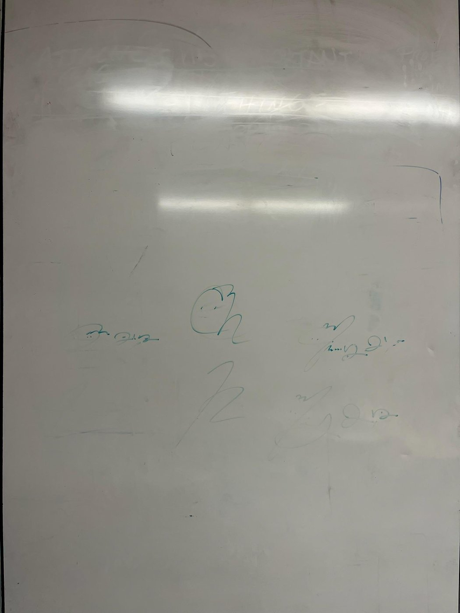
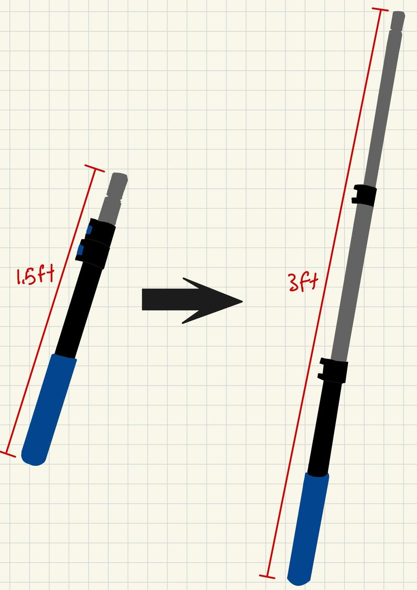
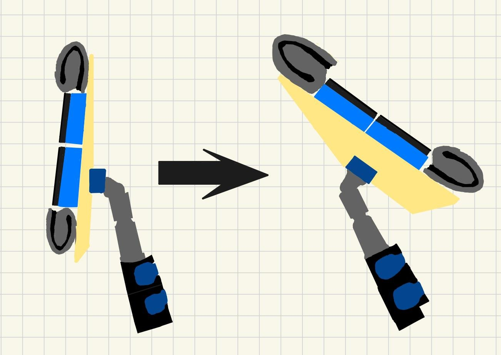
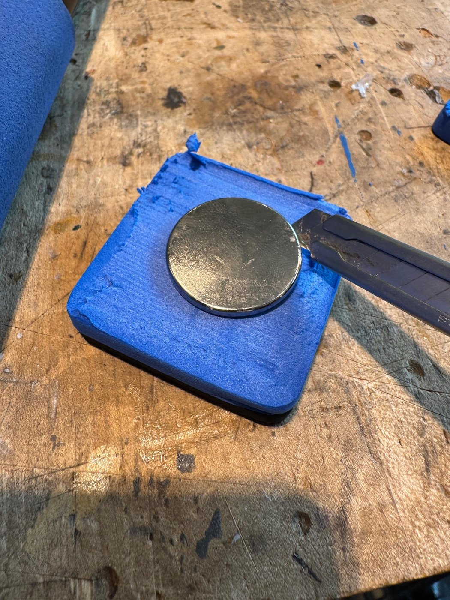
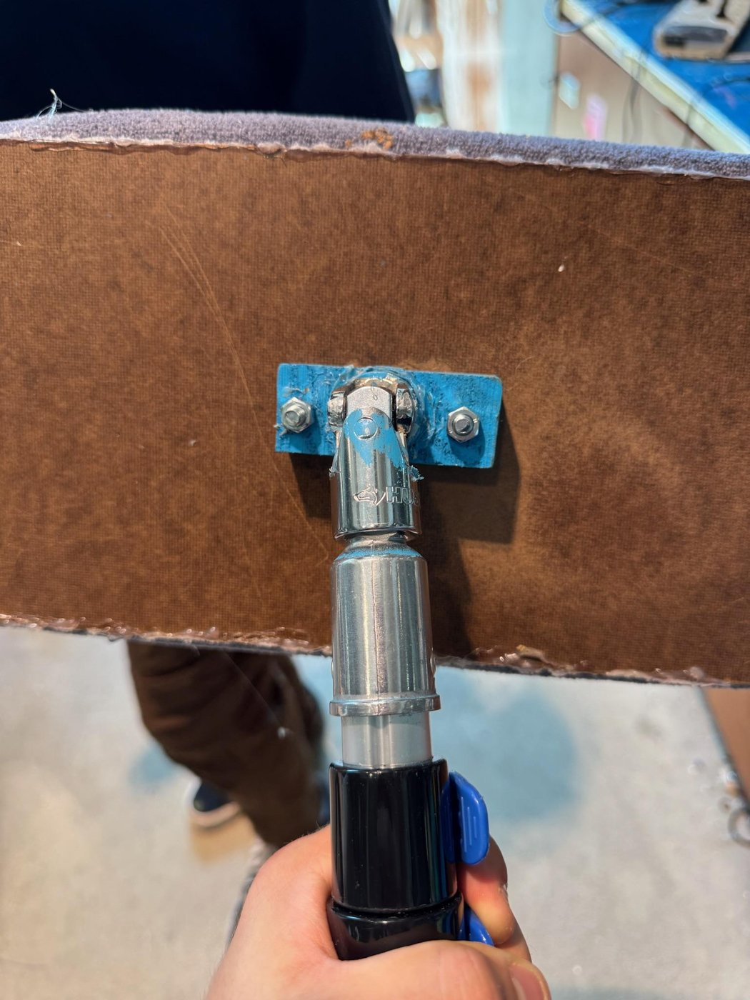

MagClean — Magnet-Assisted Whiteboard Eraser
Role: 4-person team (Simon Kaminer, Paul Akpalu, Dominic Belyaev, Diego Niiler) — I designed and built the cleaning head end to end, produced the concept sketches for the telescoping pole and rotating head, and machined the pole assembly · Tools: manual mill, drill press, bandsaw, hand tools · Timeline: Mar – Jun 2025 · Design Thinking & Communication, Segal Design Institute, Northwestern


Designed and built a non-electric, magnet-assisted whiteboard eraser on a telescoping pole. In classroom testing it cut full-board cleaning time roughly in half — a 4,725 in² panel went from 98–105 seconds with the standard felt eraser to 48–52 seconds with MagClean, with less physical effort and no step stool.
Problem
Northwestern’s DTC classrooms run back-to-back sessions on wall-sized whiteboards. Standard felt erasers are small, leave ghosting behind, and force instructors to reach or fetch a stool for the top of the panel — so boards get cleaned partially, or not at all, between classes. The brief was a classroom-scale cleaning tool that reduced ghosting, was faster over large areas, and needed no power, installation or permanent fixtures.
{kind=link}

The failure mode we were designing against: ghosting left by the standard eraser.
What the client actually asked for
The project partner was a DTC instructor who cleans these boards between back-to-back sections. The interview reordered our priorities and set two constraints that drove the whole design:
- “Speed over deep cleaning.” First tier was speed and area covered; effectiveness and ease came second. That killed every concept optimised for scrubbing power.
- Nothing may be permanently mounted — the whiteboard walls fold and have to store. She suggested magnets or velcro herself.
- Everything left in the room walks off. Spray bottles get taken, so the tool had to work without consumables that need replacing.
- Must suit the shortest and tallest users without being awkward for either.
- Non-toxic if any solution is used; sustainability matters; noise is fine unless excessive.
Those set our design targets: clean a full classroom board in under a minute, remove visible ink in a single pass, no external power, and don’t abrade the board surface.
Three mockups, one design
We built and tested three separate concepts before converging. None of them won outright — the final tool is an assembly of the parts of each that survived testing.

Gravity cleaner. Cleaned poorly and needed too much setup — but its magnets demonstrably raised pad pressure.

Swiffer-style. The pad, swivelling head and telescoping pole survived; the spray mechanism was dropped as over-built for how rarely it’d be used.

Reservoir. Contributed the absorbent pad that holds cleaning solution.
Final design = telescoping pole, swivelling head and eraser pad from the Swiffer concept + absorbent microfibre from the reservoir concept + magnetic attachment from the gravity concept. Total build cost: $70.94, entirely off-the-shelf apart from the shop-cut backing.
Design
My sketches below carried the three features that survived into the final build. The cleaning head was mine end to end — I designed the dual-surface layout, sized it, worked out the magnet placement behind the pad, and built it.
{kind=link}

Telescoping pole, 1.5–3 ft. Full-height reach without a stool.

Dual-surface pad — my design. Dry-erase centre, microfibre border for ghosting.
{kind=link}

Hinged head, ~180°. Keeps the pad flat through a stroke.
- Magnetic reinforcement. Neodymium magnets behind the pad pull the head into the steel-backed board, supplying contact pressure that the user would otherwise have to apply by pushing. That’s what makes it less tiring rather than just longer-reaching.
- ~12 × 7 in head — roughly 7× the board area per stroke of a standard classroom eraser.
- Dual-surface pad. Dry centre for marker residue; microfibre border, lightly misted, for the ghosting the felt eraser leaves behind. Both in one pass.
- Entirely off-the-shelf and non-electric — no installation, no batteries, repairable from hardware-store parts.
Building the cleaning head
The head is the part that does the work, and it’s the part I built. It went together in three stages: pocket the magnets into the foam backing, lay out the dual-surface pad, then mount the whole thing to the pole.
Magnets first. Each disc magnet sits in a pocket carved into the foam backing rather than being glued to the surface. Recessing them keeps the pad face flat — a proud magnet would ride the pad off the board and defeat the point — and spreads the pull across the backing instead of concentrating it on a glue joint.

Pockets carved into the foam backing.
{kind=link}

Magnet seated flush, so the pad face stays flat.

Dual-surface layout — eraser centre, microfibre edges.
Then the surfaces. Black eraser blocks run down the centre with microfibre strips along both long edges, so a single pass takes the marker off with the centre and catches ghosting with the trailing edge — in either stroke direction, which is why the microfibre is on both sides rather than one.

Finished head, ~12 × 7 in.
{kind=link}

Hinged pole mount on the back.

Pole machined on the manual mill.
What expert testing changed
We ran a user test with Professor Birdwell, a DTC instructor and exactly the target user, on 8 May 2025. He found the real weakness immediately: the head wasn’t applying enough pressure for its size. A large pad spreads whatever force the user supplies over more area, so it erased worse than a small eraser pressed hard. His prescription was to cut surface area, add magnets, and lighten the whole tool — and the design changed on all three counts. He also pushed for a ball-and-socket joint so the head stays flat through a stroke, which went straight into the bill of materials.
Two of his suggestions we did not act on, and both are still open: making the head detachable from the pole for close-up work at eye level, and designing somewhere for the tool to live in the classroom — which matters, given the client told us anything loose in the room disappears.
Results
We timed MagClean against the standard DTC felt eraser on real classroom boards.
| Test | Standard felt eraser | MagClean | Change |
|---|---|---|---|
| Full board, 4,725 in² | 98–105 s | 48–52 s | ~50% faster |
| Spot clean, 35 × 31 in | 14 s | 8 s | ~43% faster |
| Board area per stroke | 1× | ~7× | head area |

Timed runs, two testers, full-board and spot-clean tasks.

A timed run in the classroom.
Testers also reported less physical effort and better reach on tall panels, and visual inspection showed less ghosting than the felt eraser left. The design was reviewed in a user test with Professor Birdwell, a DTC instructor and the target user for the tool.
What I’d change
- The timing test needs more testers. Our numbers come from a small user group on a handful of runs. The ~50% figure is a real measured result, but it’s an early-stage one — a proper trial would use more testers, randomised order, and a controlled ink dwell time, since how long marker sits changes everything.
- Quantify the magnetic pressure. We selected magnets by feel and by what held. Measuring the actual normal force, and relating it to erasing effectiveness, would let the design be tuned rather than guessed — and would tell us how much magnet is genuinely needed.
- The microfibre border needs a wetting story. It works when misted manually, which puts a second step back on the user. One of our discarded concepts had an integrated reservoir; revisiting that with the current head is the obvious next iteration.